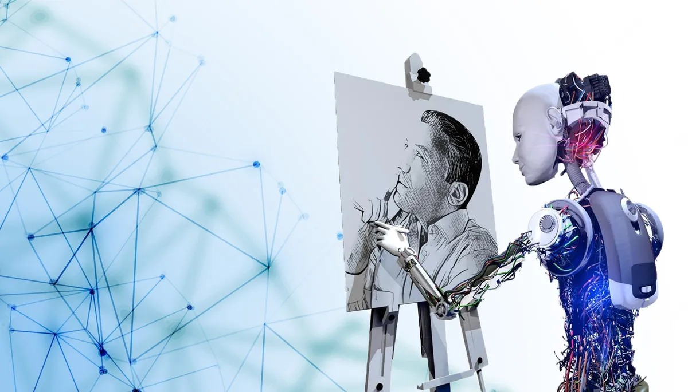

El impacto de la inteligencia artificial en la creación artística
Creación de Arte Generativo

La IA puede generar obras de arte originales utilizando algoritmos y redes neuronales. Ejemplos incluyen pinturas, música y literatura creadas por IA, como el famoso retrato “Edmond de Belamy” que se vendió por $432,500.
Artistas están colaborando con IA para expandir sus capacidades creativas. La IA puede sugerir ideas, patrones o incluso completar obras, permitiendo a los artistas explorar nuevas fronteras.